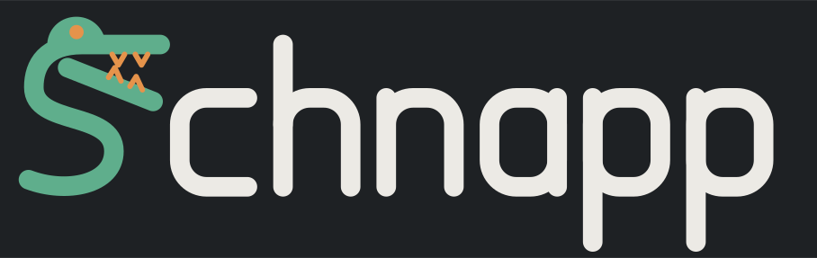
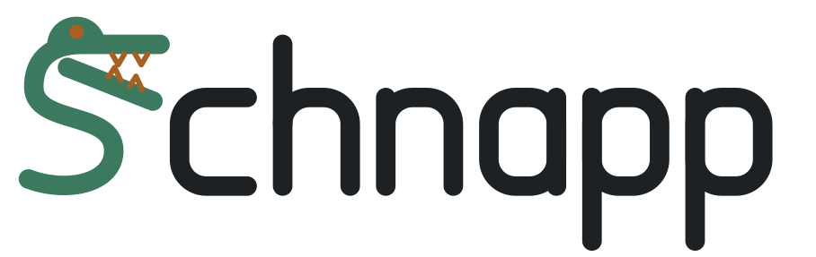
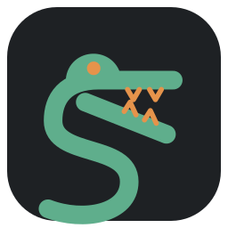
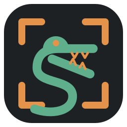
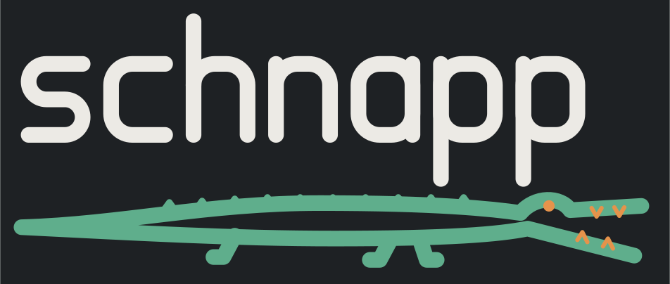
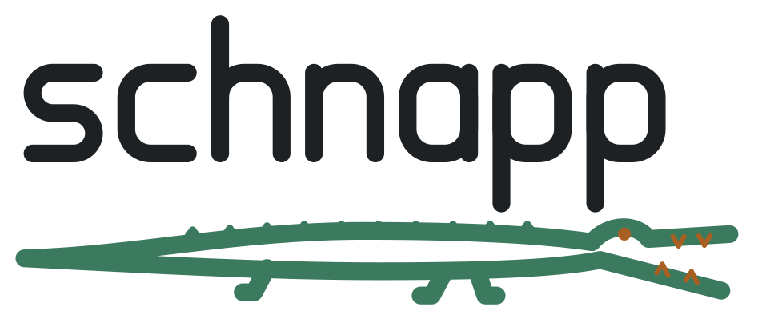

Dunkelgrauer Grund, dezentes Grün und Orange, aufeinander abgestimmt und in der Oberfläche nutzbar
(marke/farben.md). Schriftzug wie Runde 1. Quelle: marke/werkzeug/runde2.py.
Kopf oben mit offenem Maul nach rechts, Schwanz unten. Auch allein als App-Symbol.




Das Maul schnappt nach dem „pp“. Gut für Kopfbereiche (README, Webseite); als App-Symbol taugt A.

